Arjun, 24 · primary
The Explorer
Software engineer, Bengaluru · Premium 5 yrs
- Wants to find new indie artists through Song Radio
- Hates that every radio drifts back to his Liked Songs
“I didn’t start a radio to hear my own playlist back.”
A teardown of how Spotify helps you find new music, and an AI fix called Playlist Coach.
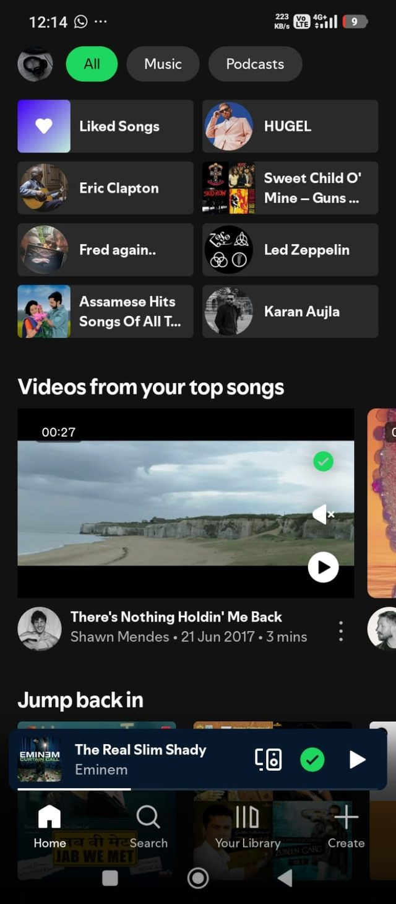
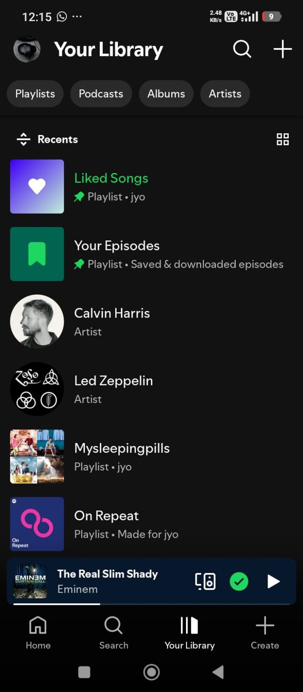
Source: Spotify Q3 2026 results, 22 Oct 2026.
Spotify’s AI discovery stackEvery one of them makes music for you.None lets you steer the radio you already started.
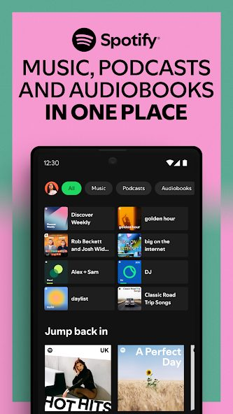
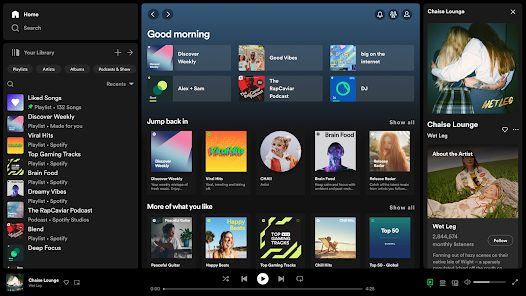
Left: the Play Store listing puts Discover Weekly, DJ and daylist up front. Above: desktop’s Now Playing adds artist context.
Android app, one real listener in India, Oct 2026.
Focus: how new music gets found, from Home to radio to Library.
6 screens: 4 phone, 1 desktop, 1 store listing.
Wants fresh music with zero effort.
Coach must: work with zero taps.
Hunts new artists through Song Radio.
Coach must: find new artists that fit.
Happy living on On Repeat.
Coach must: stay out of the way.
Builds mood playlists and guards the vibe.
Coach must: keep the vibe, add a few.
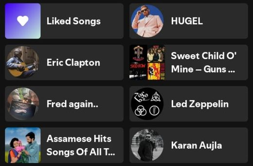
Assamese hits, Karan Aujla, Led Zeppelin and HUGEL share eight tiles. One profile, many moods: the feed must read intent, not just history.
Software engineer, Bengaluru · Premium 5 yrs
“I didn’t start a radio to hear my own playlist back.”
Product designer · 40 mood playlists
“Either it ruins my playlist or I get nothing new.”
Sales manager · commute and gym
Coach has to work without him touching it.
Arjun opens Spotify hoping for something new. Follow him through seven steps, and watch what the dashboard records at each one.
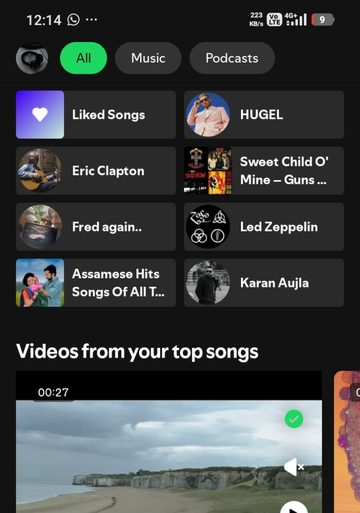
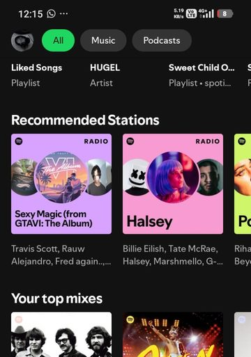
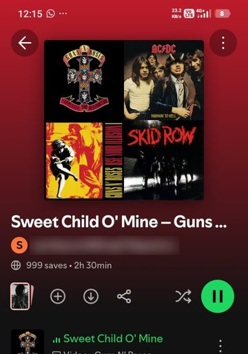
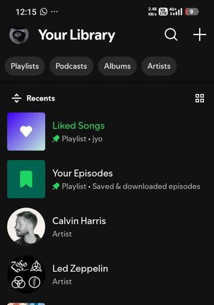
“Let me find something new.”
“All artists I already know.”
“Good songs. Heard them all.”
“Wait, I know these.”
“Skipping changes nothing.”
“Fine, my own playlist.”
“Spotify is for replay.”
DASHBOARD SEESThe dashboard sees a healthy, engaged session. Arjun found zero new songs.
FIRST SCREEN
AFTER ONE SCROLL
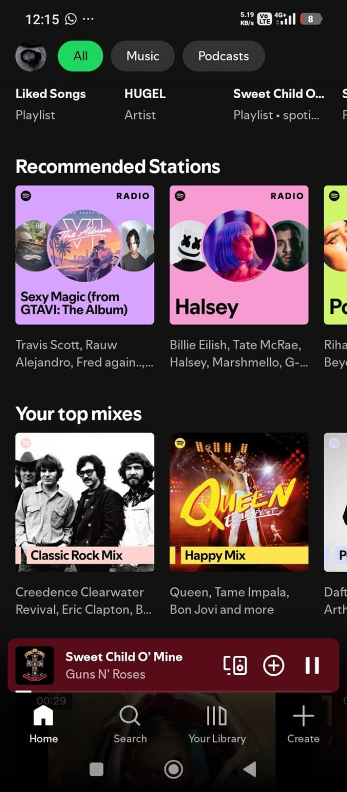
6 4 5Liked Songs, Clapton, Zeppelin, Assamese hits, Karan Aujla. Fast to resume, nothing new.
“Videos from your top songs” fills about a quarter of the first screen with an old favourite.
No Discover Weekly, DJ or daylist anywhere in the first two screens.
Radios are seeded from recent artists. No way to say “newer” before you press play.
“Your top mixes” bring back Queen, Clapton and CCR, relabelled as moods.
All, Music, Podcasts. Nothing for “new to me” or “focus”.
The store promise: Discover Weekly, DJ and daylist in the first grid.My first screen: none of them.
Two of the first three tracks carry green ticks. The playlist plays what you already own.
The only way to change what plays. No “more like this” or “newer”.
The mini-player can save or switch device, but can’t say “not this” or “why this?”.
Spotify’s own playlist, named for repetition, sits in Recents.
“Mysleepingpills”: the listener builds the context Spotify can’t infer.
Sorted by Recents, filtered by format. Nothing new lives here.
Desktop shows “About the artist”. Nothing says why this track was picked for you.
Playlist · now playing
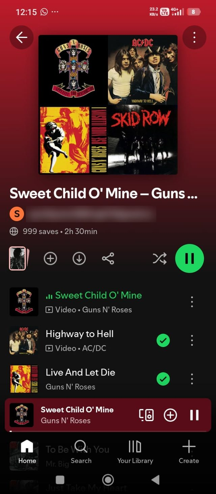
2 1 3Your Library
↑ 70% drop: streams start, but new songs rarely arrive.
Why we think it leaks hereSources: Digital Music News poll; two Spotify Community posts (single listeners, not averages). The funnel is an index, not Spotify data.
| Stage | Metric | Definition |
|---|---|---|
| 1Opens | DAU | Users who open Spotify each day |
| 2Sees | Discovery exposure | Sessions with a discovery surface in view ÷ sessions |
| 3Starts | Discovery starts | Discovery streams started ÷ exposures |
| 4Hears | Freshness | New-to-you tracks heard 30s+ ÷ tracks played |
| 5Saves | New-track save rate | New tracks saved ÷ new tracks heard |
| 6Replays | 7-day replay | Saved new tracks replayed within 7 days |
green outline = Spotify today
Prompted Playlist, AI DJ requests, Smart Shuffle, Taste Profile beta
Steering lives in DJ and prompts. Radio, shuffle and autoplay stay a black box.
AI Playlist (Feb 2026); Familiar and Discover chips in the queue
Chips steer the queue, but never say why a track was picked.
Playlist Playground: prompt-made playlists (iOS 26.4)
Prompt-only. Nothing helps once the music is playing.
Flow Tuner (Feb 2026): see and toggle the genres behind Flow
Genre-level, and only inside Flow.
Counts: 28, 17, 9, 6, 6, 5, 2, 2. Pink = the ones AI can fix. Free-tier limits and ads are louder, but they are business-model choices, so out of scope here. n = 51; counts overlap; the sample skews negative and India-heavy.
The algorithm is absolute trash, it plays the same songs over and over in the name of smart shuffle.Play Store review, Aug 2026
| Idea | Fixes | Reach | Impact | Conf. | Effort | RICE score | Call |
|---|---|---|---|---|---|---|---|
| Feedback that sticksRemoved songs never return | 03 | 80% | 2 | 80% | 3 | 42.7 | P0 |
| Intent check-inNew to me / Stay close / Mix | 04 | 60% | 2 | 70% | 2 | 42.0 | P0 |
| Discovery dialFamiliar ↔ New, per session | 01 02 | 50% | 2 | 70% | 2 | 35.0 | P0 |
| Live coachingSpots skip patterns, offers a fix | 01 03 | 50% | 3 | 50% | 3 | 25.0 | P0 |
| Why this songA reason tied to your seed | 05 | 70% | 1 | 60% | 3 | 14.0 | P1 |
| Home discovery moduleDiscovery above the fold | 06 | 90% | 0.5 | 40% | 2 | 9.0 | Later |
| Chat with your radioType or say what to change | 04 | 30% | 2 | 40% | 5 | 4.8 | Later |
Dashed pink line = MVP cut. RICE = Reach × Impact × Confidence ÷ Effort. Reach = % of radio and autoplay users per quarter · Impact 0.5–3 · Confidence from evidence · Effort in person-months. All scores are assumptions to re-score with real data.
TODAY
One knob: shuffle.
WITH COACH · START
Song radio · Coach on
Lumen Harbor · your seed song
What do you want right now?
WITH COACH · MID-SESSION
Now playing · Coach on
One tap before radio starts: New to me, Stay close or Mix. Or type it.
Familiar ↔ New for this session. The session beats your history.
Spots skip patterns and offers a one-tap fix.
Removed songs never return, and a receipt proves it.
A plain-words reason tied to your seed song.
Lives inside Song Radio, Smart Shuffle and autoplay. No new tab, no new habit.
Track and artist names in the mockups are invented.
If Premium listeners can steer radio with intent chips, a discovery dial and sticky feedback, then new-track saves per user rise 10% or more, because more of what plays is both new and a good fit.
Premium users who start Song Radio, Smart Shuffle or autoplay 2+ times a week. Android and iOS; India, US, UK.
Randomise by user, sticky across devices, so no one ever sees both versions.
50 / 50 for 4 weeks to cover weekly cycles. Read week 1 separately for novelty.
North Star: ~6.5K per arm. Churn guardrail: ~200K per arm, so we size for churn.
α 0.05 · power 0.8 · assumed baselines (20% weekly savers; 3% monthly churn)Primary: new-track saves per user. Secondary: early skips, freshness, repeat ratio. Guardrails: listening time, churn, nudge dismissals, crashes.
North Star up (p < 0.05), early skips down and freshness up, and no guardrail past its limit (e.g. listening time −1%).
Novelty spike → read week 1 apart
Lean-back users ignore chips → smart defaults
Uneven split → daily sample-ratio check
Read it bottom-up: fewer early skips and repeats make room for fresh tracks that fit, which moves the North Star, which feeds the business metrics.
A very low skip rate can mean radio only plays familiar songs: the echo chamber we are fighting. Early skips must fall while freshness rises. We count skips under 30 seconds, on radio only.
| Metric | Type | Target |
|---|---|---|
| DAU, Coach vs control | Business | +0.5–1% |
| Premium churn | Business | −5% rel. |
| Listening time | Business | no drop |
| New-track saves per user | North Star | +10% |
| Early skip rate on radio | Driver | −15% |
| Repeat ratio across seeds | Driver | −20% |
| Freshness (new, 30s+) | Driver | +15% |
| Save rate on new tracks | Driver | +5% |
Targets are assumptions, set without Spotify baseline data. Small business targets are deliberate: even 1% of DAU is a big win at Spotify’s scale.
Every screenshot comes from one Premium account in India, on Android. Free tier, iOS and other markets may behave differently.
Play Store reviews over-sample unhappy users. The counts show themes, not how common each problem is.
The shape rests on one poll and a few Community posts. The numbers are an index, not Spotify data.
No interviews and no baselines yet. Every RICE score and metric target should be re-set with real data.
Disagree with a score? Tell me which one.
Sources: Spotify Q3 2026 results · Google Play listing and 51 reviews · Digital Music News poll (1,067 votes) · Spotify Community threads · Android Authority · SoundGuys · my own screenshots, Oct 2026.